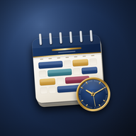

Roster BoardLast updated 2 October 2026
This Privacy Policy explains how Roster Board ("Roster Board", "we", "us" or "our") collects, uses, stores, discloses and protects personal information when you use the Roster Board application, website and related services (together, the "Service").
Roster Board is designed to give shift workers a simple way to record, manage and analyse their rosters, overtime, leave and personal commitments.
By using the Service, you acknowledge that you have read this Privacy Policy. Where applicable, we will obtain any consent required by law before collecting or using your information.
Roster Board is operated by Jacob Fuller, an individual based in Australia.
If you have any questions about this Privacy Policy, your personal information, or how your information is handled, you can contact us at: contact@rosterboard.net
The information we collect depends on how you use the Service and the features you choose to use.
Account information
If you create a Roster Board account, we may collect:
Passwords are not stored in plain text. Authentication is handled using the security mechanisms provided by our authentication infrastructure.
Roster and work information
When you use Roster Board, you may enter information such as:
You control what information you enter into the Service.
Roster Board does not require you to provide your employer, occupation, workplace, position or other employment information unless a particular feature requires it or you choose to enter it.
Personal calendar information
You may choose to enter personal information into calendar entries, reminders or notes.
This information may include appointments, events or other information you choose to record.
You should avoid entering information that you do not want stored by the Service.
Shared-roster information
If you choose to connect your Roster Board account with another user, we collect information necessary to establish and manage that connection, including the relevant email address and invitation or connection status.
Technical information
Roster Board does not include analytics, advertising or tracking tools. Our hosting and database providers automatically process standard technical information, such as your IP address, browser type and request logs, only to deliver and secure the Service.
To display the app, your device also downloads code libraries from jsDelivr and cdnjs (Cloudflare) and fonts from Google Fonts. Like any website, these providers receive your IP address and browser information when they deliver those files.
Information stored locally on your device
Roster Board may allow you to use certain features without creating an account.
When you use Roster Board without an account, your roster information is stored locally in your browser or device and is not transmitted to Roster Board's servers.
Because this information remains on your device, Roster Board cannot recover it if you delete your browser storage, clear your application data, lose access to the device, or otherwise remove the locally stored information.
Reminders and notifications
If you turn on a reminder for a calendar event, the reminder is scheduled on your own device. In the iPhone app it is delivered by iOS's local notification system; on the web it is shown by your browser while Roster Board is open. Reminders are not sent through a push-notification server, and we do not receive a device token or notification identifier. You can turn notifications off at any time in your device or browser settings.
PDF exports
PDF rosters are created on your device. They are only shared if you choose to save, print or send them, for example through the iOS share sheet.
Purchases
Roster Board Premium is sold in the iPhone app through Apple's App Store. Apple processes the payment, so we never receive your card or payment details. The app checks whether you own Premium using the purchase information Apple provides on your device; this is not sent to our servers. Manage or cancel a subscription in your Apple ID settings.
The iPhone app
The Roster Board iPhone app does not use advertising identifiers, does not track you across other companies' apps or websites, and does not include third-party analytics or advertising tools. If you have chosen to share diagnostics with app developers in your device settings, Apple may provide us with anonymous crash reports and usage statistics under Apple's own privacy policy.
We generally collect personal information:
We do not purchase personal information from data brokers for the purpose of operating Roster Board.
We use information we collect to:
We do not sell or rent your personal information.
We do not use your roster or personal calendar information for targeted advertising or advertising profiles.
Roster sharing is an optional feature.
If you choose to connect your account with another Roster Board user and that user accepts the connection, the connected users may view the roster information permitted by the sharing feature.
At present, shared roster information may include:
Personal calendar entries, personal shift types, shift and type notes, the names and notes on shift swaps, birthdays and pay settings are never included in shared roster information.
These restrictions are enforced by the Service's server-side access controls and are not intended to rely solely on information being hidden from the user interface.
Either connected user may remove the connection. Once the connection is removed, the Service will no longer provide ongoing access to shared roster information through that connection.
We use third-party technology and infrastructure providers to operate Roster Board.
These providers may process or store information on our behalf where necessary to provide the Service.
Our infrastructure currently includes services such as:
We may use additional service providers in the future where reasonably necessary to operate, secure or improve Roster Board.
We take reasonable steps to require service providers that process personal information on our behalf to handle that information appropriately and only for purposes connected with providing their services to us.
Depending on the infrastructure, service providers and configuration used by Roster Board, personal information may be stored or processed in Australia or another country.
Some of our technology providers operate infrastructure or use subprocessors located outside Australia.
Where required by applicable privacy laws, we take reasonable steps in relation to overseas disclosure of personal information.
Because the location of infrastructure and service providers may change over time, users should contact us if they require information about the current countries in which particular categories of personal information may be processed.
We take reasonable technical and organisational measures to protect personal information from misuse, interference, loss and unauthorised access, modification or disclosure.
These measures may include:
We design the Service so that a user's account data is accessible only through authorised access mechanisms, subject to the limited sharing functionality described in this Privacy Policy.
However, no internet transmission, electronic storage system or security measure can be guaranteed to be completely secure.
We retain personal information for as long as reasonably necessary to provide the Service, maintain your account, meet our legal obligations, resolve disputes, enforce our agreements, and protect the security and integrity of the Service.
If you delete your account, we will take reasonable steps to delete or de-identify personal information associated with your account within a reasonable period, subject to information that we are required or permitted to retain.
To let you recover lost entries, your account keeps up to 10 earlier copies of your roster data, which we can restore if you contact us. Something you delete may therefore remain in those copies until newer backups replace them. All copies are removed when you delete your account.
Some information may remain temporarily in security logs or other technical systems before it is automatically deleted or overwritten.
Information that is required to be retained by law may be retained for the applicable legal period.
You can delete your Roster Board account at any time from within the app (Account → Delete account). This permanently removes your account, your cloud backup and the data stored on that device. You can also request deletion by contacting: contact@rosterboard.net
Depending on the applicable law and circumstances, you may also request access to, correction of, or a copy/export of personal information we hold about you.
We may need to verify your identity before processing a request involving your personal information.
We will respond to verified requests within a reasonable period and in accordance with applicable law.
Roster information is entered and controlled by you.
You are responsible for ensuring that information you enter into Roster Board is accurate and up to date.
If you identify an error in personal information held by us, you may contact us and request that it be corrected.
Roster Board is not directed to children under 16 years of age.
We do not knowingly collect personal information from children under 16.
If you believe that a child has provided personal information to Roster Board, please contact us at contact@rosterboard.net. We will take reasonable steps to investigate and, where appropriate, delete the information.
Where the Service provides a choice about whether information is collected or shared, you can choose whether to use that feature.
For example, creating an account is not required for features that Roster Board makes available through local device storage.
You may also choose not to use roster-sharing functionality.
Please note that disabling or declining certain information or features may mean that some parts of the Service cannot operate.
If you believe that Roster Board has handled your personal information in a way that breaches applicable privacy law, please contact us first at: contact@rosterboard.net
Please provide enough information for us to understand your concern and, where possible, the relevant account or transaction details.
We will investigate your complaint and respond within a reasonable period.
If you are not satisfied with our response, or if you believe your complaint has not been appropriately addressed, you may be able to contact the Office of the Australian Information Commissioner (OAIC) or another relevant privacy regulator, depending on your circumstances.
We may update this Privacy Policy from time to time to reflect changes to Roster Board, our technology providers, our information-handling practices or applicable legal requirements.
When we make material changes, we will take reasonable steps to notify users where appropriate.
The "Last updated" date at the beginning of this Privacy Policy indicates when it was most recently revised.
For questions, privacy requests, complaints or other concerns regarding Roster Board or this Privacy Policy, contact:
Roster Board
Email: contact@rosterboard.net